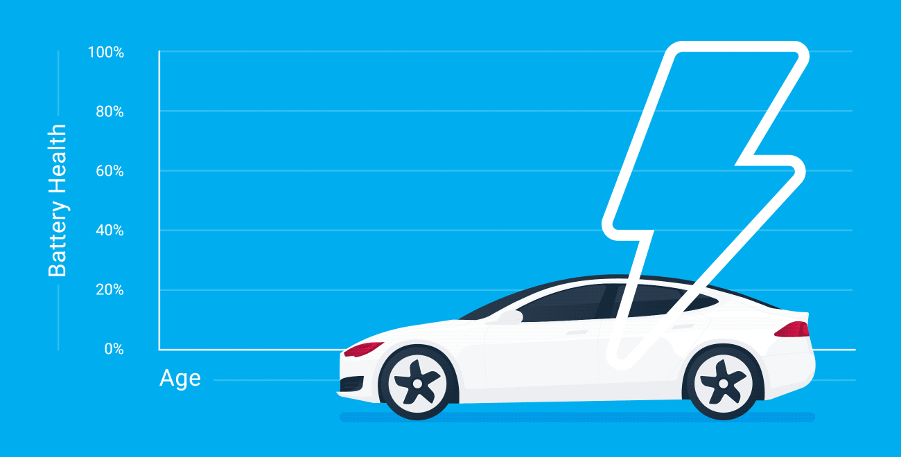

L
egend Motors
Back
Battery Replacement

"We offer a meticulous car battery change service, ensuring that your vehicle is running in the best possible condition. Changing the battery regularly keeps the car's electrical system healthy and improves its performance, and we guarantee to provide this service with the best quality. Changing a battery can be difficult and stressful, but with our service you can get and install a new battery quickly and easily. Feel free to contact us if your car battery needs to be replaced, we provide battery change service with best price and quality. We use high quality and reliable batteries in our battery change service, to ensure you the most flawless experience. Some cars require special batteries, and we offer a wide range of batteries to suit every make and model of car, to ensure that everyone can have a battery change service. Our service for changing batteries includes checking the entire electrical system of the car, to ensure that there are no problems affecting the performance of the new battery."